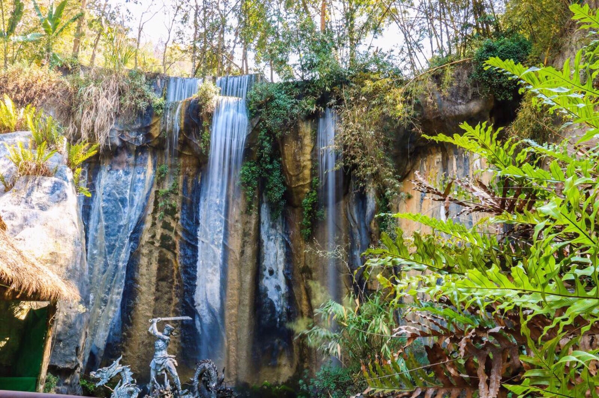
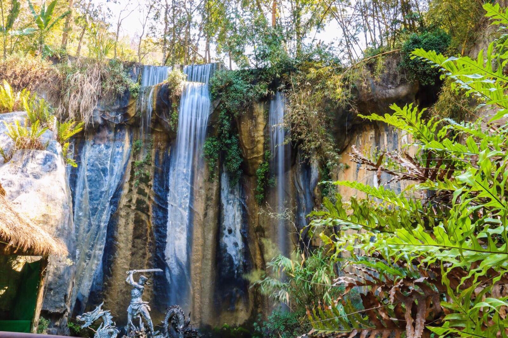

❤
点击展开或收起
西双版纳原始森林公园 （地址：云南省西双版纳傣族自治州景洪市昆洛公路）
1.标签 4.3分 4A 天然氧吧 公园 民俗村
2.简介
西双版纳原始森林公园是全州离景洪城最近的一块原始森林。主要看三个站，第一站是孔雀山庄附近的孔雀放飞，每场约10分钟。当驯养员一声哨
响，上百只孔雀在空中划出一道优美的弧线，越过波光粼粼的湖面，降落在岸边，场面非常震撼。在这里，游人还可以与这些孔雀一起
嬉戏、拍照，非常有趣。第二站是爱伲山寨，寨子里可以观看爱伲民族歌曲、竹竿夹脚舞、冬巴嚓等等，挺有民族风情的。第三
站是民族风情演艺场，这里也是民族歌舞表演，还有小型的泼水节活动可以参加。
3.开放时间
7:30-18:00
4. 门票信息
成人票:65人民币(1月1日-12月31日周一-周日)半票:国内本科及以下学生持学生证享受半价优惠。
免票:1.2米及以下、6岁以下儿童、70岁以上老人、现役军官、残疾人持相关证件免票。
5.联系方式
官网
http://xsbnysslgy.ftour.org/.
电话
0691-27599990691
6.交通信息
*公交
乘坐花卉园-森林公园的公交车，至终点下车即是。8:00-12:00每小时一班，下午发车时间为15:00、16:30、 17:30。 5元/人
7.旅游时节
西双版纳地区最佳的旅游时间在10月至次年6月。西双版纳的气候只有干湿之分，每年11月至次年4月为干季，雨季在每年5-10月间。